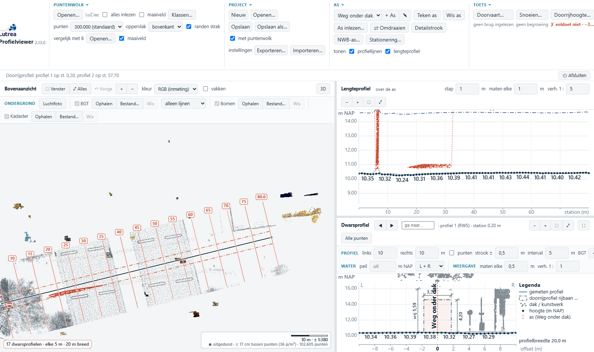
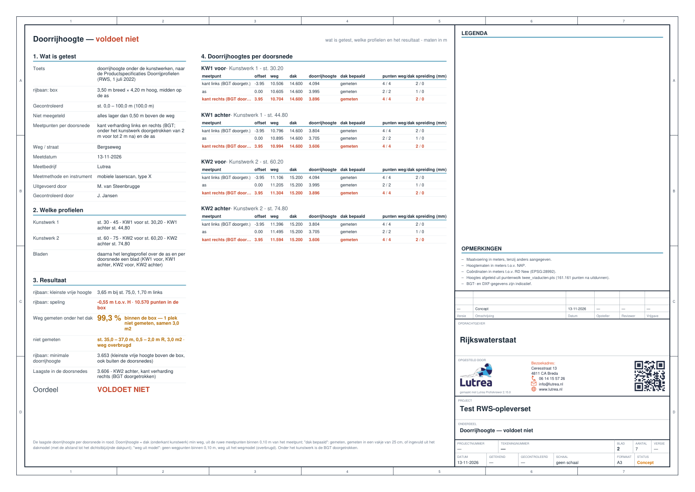
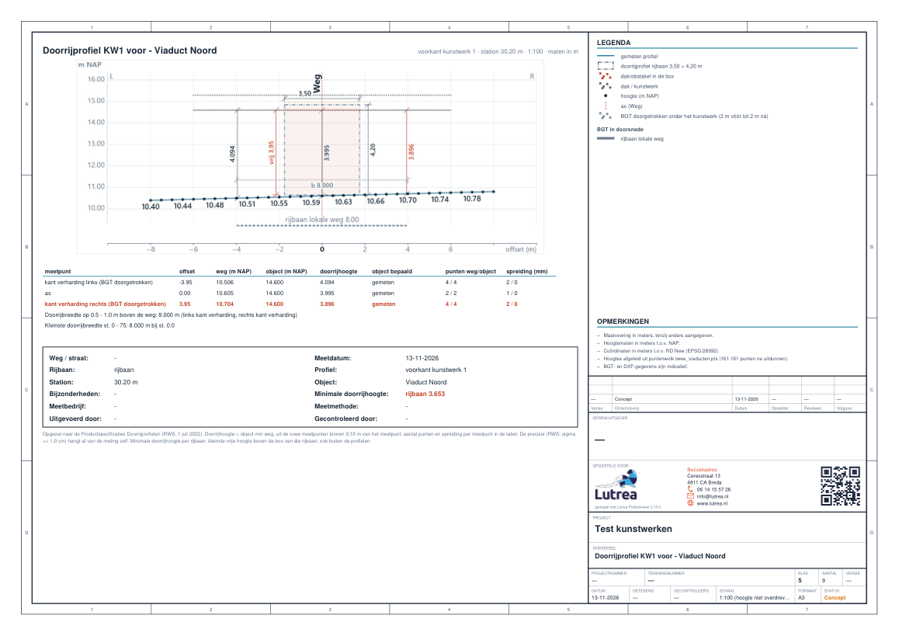

Lutrea Profielviewer · tool 3 van 4
Doorrijhoogte
Vrije hoogte onder viaduct, dak of kunstwerk, ook als RWS-doorrijprofiel
Voor gemeenten, provincies en opdrachtnemers van Rijkswaterstaat

Profielen ToolDoorvaarthoogteDoorrijhoogteSnoeien
Kan het verkeer hier onderdoor? De tool zet een box op het wegdek en meet de ruimte tot het dak, weg en dak uit één puntenwolk, en maakt het doorrijprofiel in de opzet van de RWS-productspecificatie.
1
Inlezen
Eén scan met weg en dak; niets splitsen. Vegetatie laat je bij een LAS/LAZ gewoon weg.
2
As over de weg
Onder het kunstwerk door. Kant verharding komt uit de BGT en loopt onder het dak door.
3
Toetsen
Tot vier boxen per rijbaan of fietspad. Per kunstwerk een doorsnede voor en achter, ook als het schuin over de weg ligt. binnenkort
4
Opleveren
Een PDF-blad per doorrijprofiel met meetpunten, tabel en tekstvak. De opleverset met overzichtsblad. binnenkort

1 puntenwolk
weg en dak samen; waar onder het dak geen weg gemeten is, wordt die overbrugd en gemeld
2 per kunstwerk
doorsnedes aan voor- en achterkant, vanzelf gevonden en te verschuiven binnenkort
Per meetpunt
het aantal punten en de spreiding binnen 10 cm: zo zie je of de meting de precisie haalt die RWS vraagt
4 boxen
tegelijk toetsen, bv. rijbaan en fietspad, met voorwaarden van 2,30 tot 4,50 m


Wat je krijgt
- De kleinste vrije hoogte per rijbaan, ook buiten de profielen
- Doorrijbreedte op 0,5 – 1,0 m boven de weg
- Dakmodel: ook bij een dunne scan overal een dak binnenkort
- Kunstwerken met naam (KW1, KW2) in het lengteprofiel binnenkort
- Invulvelden voor de RWS-gegevens binnenkort
Waarom het werkt
- Gemeten op de ruwe punten. De 1 cm van RWS vraagt een terrestrische of goede MLS-scan; de spreiding laat zien of je die hebt
- De dekkingskaart laat zien waar onder het dak niet gemeten is
- Vangrails en auto's onder het dak tellen niet als dak
- Voor de gemeente het blad; voor werk aan RWS de basis (portalen, foto's en verificatierapport nog niet)